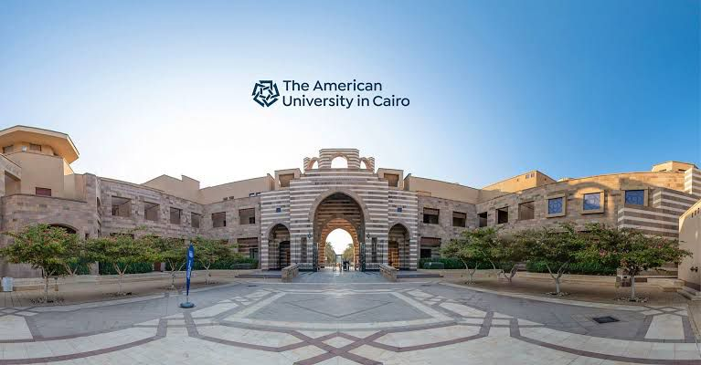

The American University in Cairo (AUC) is a private research university in Cairo, Egypt. The university offers American-style learning programs at undergraduate, graduate, and professional levels, along with a continuing education program. The AUC student body represents over 50 countries.AUC's faculty members, adjunct teaching staff and visiting lecturers are internationally diverse and include academics, business professionals, diplomats, journalists, writers and others from the United States, Egypt and other countries. AUC holds institutional accreditation from the Middle States Commission on Higher Education in the United States and from Egypt's National Authority for Quality Assurance and Assessment of Education.
 next